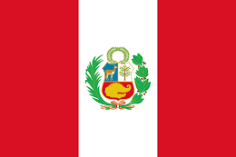

- Primeiro Campeão Mundial Brasileiro Jovem: Em
2014, Gabriel se tornou o primeiro brasileiro a vencer o
Campeonato Mundial de Surfe da WSL, e também o mais jovem a
conquistar o título com 20 anos.
- Ele é um surfista goofy-foot: ou seja, surfa
com o pé direito na frente da prancha.
- Aerial King: Medina é conhecido por sua
habilidade em manobras aéreas, sendo um dos surfistas mais
inovadores quando se trata de voar sobre as ondas.
- Medina tem duas irmãs: Felipe e Sophia. Sophia
segue os passos do irmão e já é uma surfista talentosa.
- Família de Surfistas: Gabriel vem de uma
família de surfistas e começou a surfar aos 9 anos com o incentivo
do seu padrasto, Charles, que se tornou seu treinador.
- Ele começou a surfar aos 8 anos: incentivado
pelo padrasto Charlao, que também era surfista amador.
- Medina Foundation: Em 2017, Gabriel e sua
família fundaram o Instituto Medina, com o objetivo de apoiar
jovens talentos do surfe em Maresias, sua cidade natal.
- Medina admira atletas: como Mick Fanning,
Kelly Slater e o piloto Ayrton Senna.
- Reconhecido pela FIFA: Em 2018, Medina recebeu
o prêmio de "Melhor Atleta do Ano" pela FIFA na categoria de
surfe, destacando-se como um dos maiores nomes do esporte.
- Gabriel Medina mantém uma forte amizade com o jogador Neymar
Júnior.
- Em 2021, Medina fez uma pausa no surfe: por
questões de saúde mental, retornando com uma nova determinação e
foco nas competições.
- Em 2024, Medina foi forçado a retirar as imagens do Cristo
Redentor:
de suas pranchas para competir nas olimpíadas.
Desafios: Competiu Contra Quem?
Mick Fanning
Austrália
Surfing
Para saber mais sobre o atetla clique no botão.
Gabriel Medina enfrentou o tricampeão mundial Mick Fanning em várias
competições ao longo de sua carreira, protagonizando embates
emocionantes que marcaram o surfe profissional. Em Pipeline, Medina e
Fanning protagonizaram baterias intensas, onde a habilidade de ambos
em ondas pesadas se destacou. Em Bells Beach, outro palco clássico do
surfe mundial, os duelos entre os dois foram recheados de técnica e
competitividade, com Medina buscando constantemente superar o
australiano, um dos maiores nomes do esporte, em uma rivalidade cheia
de respeito e admiração mútua.
Kelly Slater
United States of America
Surfing
Para saber mais sobre o atleta clique no botão.
Gabriel Medina enfrentou Kelly Slater, o maior nome do surfe mundial,
em vários eventos decisivos. O ícone norte-americano, dono de 11
títulos mundiais, sempre foi um adversário de peso para Medina,
gerando baterias eletrizantes em ondas como Pipeline, onde ambos
demonstram uma maestria inigualável.
Ítalo Ferreira
Brasil
Surfing
Para saber mais sobre o atleta clique no botão.
Medina e Ítalo Ferreira, dois dos maiores nomes do surfe brasileiro,
têm se enfrentado em confrontos acirrados, elevando o nível do surfe
mundial. Com estilos agressivos e aéreos, suas baterias são sempre
aguardadas pelos fãs, especialmente em competições decisivas como o
WSL Finals.
Julian Wilson
Australia
Surfing
Para saber mais sobre o atleta clique no botão.
Julian Wilson, conhecido por seu estilo fluido e aéreo, já teve
confrontos acirrados com Medina, especialmente em etapas como Gold
Coast e Teahupo'o. Esses embates são marcados por uma rivalidade
saudável, com ambos exibindo performances de alto nível e manobras
inovadoras.
Filipe Toledo, um dos surfistas mais explosivos do circuito, tem uma
rivalidade empolgante com Medina. Seus confrontos são marcados por
manobras aéreas e uma disputa intensa por títulos nas etapas mais
rápidas do tour, como Trestles e J-Bay, onde ambos brilham.
Competições da Olímpiadas 2024
John John Florence
United States of America
Surfing
Para saber mais sobre o atetla clique no botão.
Os duelos entre Gabriel Medina e John John Florence são muito
esperados devido ao alto nível técnico de ambos, especialmente em
competições no Havaí. Medina e John John demonstram grande habilidade
e tática em suas performances, fazendo desses confrontos momentos
emocionantes no circuito mundial. As competições no Havaí são palco
frequente dessas disputas, onde o estilo agressivo de Medina se
encontra com a precisão e estratégia de John John, resultando em
baterias intensas e altamente competitivas que destacam o melhor dos
dois surfistas.
Alonso Correa

Peru
Surfing
Para saber mais sobre o atleta, clique no botão.
Alonso Correa, representando o Peru, é um dos surfistas em ascensão,
conhecido por sua habilidade em ondas tubulares e sua garra nas
competições internacionais. Ele enfrentou Medina em diversas
competições e é um adversário respeitável no cenário mundial do surfe.
Andy Criere
Spain
Surfing
Para saber mais sobre o atleta, clique no botão.
Andy Criere, representando a Espanha, é um surfista destemido
conhecido por suas manobras radicais e seu domínio em ondas europeias.
Criere e Medina já se enfrentaram diversas vezes, trazendo emoção e
rivalidade ao circuito.
Joan Duru
France
Surfing
Para saber mais sobre o atleta, clique no botão.
Joan Duru é um surfista francês com um estilo poderoso e fluído, capaz
de combinar força e elegância nas ondas. Com uma carreira de sucesso
na WSL, Duru sempre desafia seus oponentes com performances
consistentes e precisas.
Ramzi Boukhiam
Morocco
Surfing
Para saber mais sobre o atleta, clique no botão.
Ramzi Boukhiam é o primeiro surfista marroquino a competir nos Jogos
Olímpicos, trazendo orgulho ao seu país com performances explosivas e
uma abordagem ousada nas ondas. Ramzi e Medina se enfrentaram em
duelos marcantes, destacando o crescimento do surfe africano no
cenário mundial.
Billy Stairmand
New Zealand
Surfing
Para saber mais sobre o atleta, clique no botão.
Billy Stairmand é um surfista neozelandês com um estilo progressivo e
uma abordagem criativa nas ondas. Ele já se destacou em diversas
competições, sendo conhecido por suas manobras aéreas e por trazer uma
energia vibrante às competições.
Filipe Toledo
Brazil
Surfing
Para saber mais sobre o atleta clique no botão.
Leonardo Fioravanti
Italy
Surfing
Para saber mais sobre o atleta, clique no botão.
Leonardo Fioravanti é um surfista italiano conhecido por sua técnica
apurada e por ser um dos principais nomes do surfe europeu. Com um
espírito competitivo aguçado, ele sempre busca se superar,
especialmente quando compete contra os melhores do mundo.
Rio Waida
Indonesia
Surfing
Para saber mais sobre o atleta, clique no botão.
Rio Waida, representando a Indonésia, é um dos jovens talentos mais
promissores do surfe asiático. Ele tem um estilo dinâmico, combinando
manobras radicais com uma leitura inteligente das ondas, o que o torna
um adversário imprevisível.
Miguel Tudela
Peru
Surfing
Para saber mais sobre o atleta, clique no botão.
Miguel Tudela é um dos principais surfistas peruanos, conhecido por
sua força e habilidade em ondas grandes. Ele compete regularmente no
circuito mundial e é conhecido por sua persistência e vontade de
vencer.
Tim Elter
Germany
Surfing
Para saber mais sobre o atleta, clique no botão.
Tim Elter, representando a Alemanha, é um dos novos talentos no
cenário do surf mundial. Com seu estilo inovador, ele competiu contra
Medina em uma bateria intensa, trazendo o surfe alemão para o destaque
internacional.
Alan Cleland Jr
Mexico
Surfing
Para saber mais sobre o atleta, clique no botão.
Alan Cleland Jr é um dos principais surfistas do México, conhecido por
seu estilo agressivo e manobras inovadoras. Ele enfrentou Medina em
diversas etapas internacionais, destacando-se pelo seu talento e
dedicação ao esporte.
Kauli Vaast
France
Surfing
Para saber mais sobre o atleta, clique no botão.
Kauli Vaast, representando a França, é conhecido por seu domínio nas
ondas do Taiti e estilo fluido. Enfrentou Medina em uma série de
baterias desafiadoras, onde ambos demonstraram grande habilidade
técnica.
Reo Inaba
Japan
Surfing
Para saber mais sobre o atleta, clique no botão.
Reo Inaba é um dos principais surfistas japoneses, destacando-se pela
sua técnica e estilo único. Nas Olimpíadas, enfrentou Medina em uma
bateria emocionante, mostrando a crescente força do surfe asiático no
cenário mundial.
Ethan Ewing
Australia
Surfing
Para saber mais sobre o atleta, clique no botão.
Ethan Ewing, da Austrália, é reconhecido por seu estilo clássico e
elegante nas ondas. Enfrentou Medina em competições internacionais,
onde mostrou sua capacidade de combinar potência e fluidez,
tornando-se um dos jovens talentos do surfe mundial.
Griffin Colapinto
United States of America
Surfing
Para saber mais sobre o atleta, clique no botão.
Griffin Colapinto é um dos surfistas mais promissores dos Estados
Unidos, com um estilo dinâmico e agressivo. Nas Olimpíadas, ele
enfrentou Medina em baterias eletrizantes, mostrando todo o seu
talento e competitividade em ondas poderosas.
Jack Robinson
Australia
Surfing
Para saber mais sobre o atleta, clique no botão.
Jack Robinson é um dos surfistas mais habilidosos da Austrália, famoso
por seu desempenho em ondas pesadas. Ele e Medina têm uma rivalidade
saudável, com Jack mostrando frequentemente seu talento em condições
extremas, como as de Pipeline.
João Chianca
Brazil
Surfing
Para saber mais sobre o atleta, clique no botão.
João Chianca, também conhecido como "Chumbinho," é um dos jovens
talentos do surfe brasileiro. Com um estilo explosivo e versátil,
enfrentou Medina em baterias emocionantes, reforçando a nova geração
de talentos do Brasil.
Jordy Smith
South Africa
Surfing
Para saber mais sobre o atleta, clique no botão.
Jordy Smith é um dos surfistas mais bem-sucedidos da África do Sul,
conhecido por sua força e estilo progressivo. Ele competiu contra
Medina em várias competições internacionais, incluindo as Olimpíadas,
onde seu talento e habilidade em ondas pesadas o destacam no circuito
mundial.
Matthew McGillivray
South Africa
Surfing
Para saber mais sobre o atleta, clique no botão.
Matthew McGillivray é um surfista talentoso da África do Sul,
conhecido por sua coragem em ondas grandes. Ele enfrentou Medina em
várias competições importantes, trazendo um estilo determinado e
técnica refinada para suas baterias, especialmente em condições
desafiadoras.
Kanoa Igarashi
Japan
Surfing
Para saber mais sobre o atleta, clique no botão.
Kanoa Igarashi, representando o Japão, é um dos surfistas mais
consistentes do circuito mundial. Ele e Medina já competiram em
diversas ocasiões, e Kanoa é conhecido por seu estilo técnico e
capacidade de se adaptar rapidamente a diferentes condições de onda.
Lucca Mesinas
Peru
Surfing
Para saber mais sobre o atleta, clique no botão.
Lucca Mesinas é um dos principais representantes do surfe peruano no
cenário internacional. Conhecido por seu estilo fluido e agressivo,
ele enfrentou Medina em competições importantes, mostrando o
crescimento e o talento do surfe sul-americano.